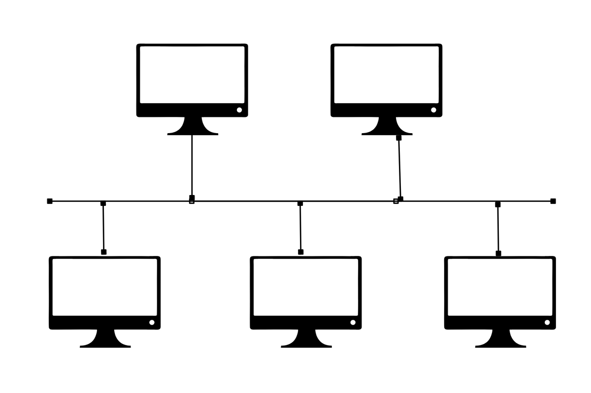

Topologi Bus

Topologi Bus adalah konfigurasi jaringan linear di mana semua perangkat komputer terhubung ke satu kabel utama sebagai jalur transmisi tunggal. Kabel pusat ini bertindak seperti koridor utama atau tulang punggung (backbone) tempat data mengalir dari satu ujung ke ujung lainnya.
Cara Kerja:
Seluruh komputer terhubung secara estafet ke satu kabel panjang yang disebut backbone. Ketika sebuah data dikirim, data tersebut akan berjalan sepanjang kabel utama dan melewati semua komputer. Setiap komputer akan memeriksa apakah data tersebut ditujukan untuk dirinya. Jika iya, data diterima; jika tidak, data diabaikan. Di ujung kabel, terdapat Terminator untuk menyerap sinyal agar tidak memantul kembali dan menyebabkan gangguan.
Kelebihan:
• Sangat Hemat Biaya: Kebutuhan kabel sangat minim karena perangkat cukup dijajarkan di sepanjang kabel utama.
• Instalasi Sederhana: Cocok untuk setup jaringan darurat atau skala kecil yang tidak memerlukan pengaturan rumit.
Kekurangan:
• Titik Kegagalan Tunggal: Jika kabel utama patah atau putus di tengah, seluruh jaringan setelah titik tersebut (atau bahkan seluruhnya) akan mati total.
• Tabrakan Data: Karena hanya ada satu jalur, jika dua komputer mengirim data secara bersamaan, akan terjadi tabrakan data yang memperlambat jaringan.
• Sulit Melacak Masalah: Jika jaringan mati, teknisi harus memeriksa sambungan satu per satu di sepanjang kabel.